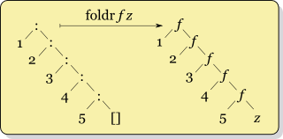

Lists, Higher-Order Functions
em Haskell
Frank Coelho de Alcantara - 2021
Conceitos Básicos: Listas
Listas são estruturas de dados homogêneas. Só podem conter elementos do mesmo tipo.
Internamente, as listas são implementadas usando listas encadeadas. Existe uma biblioteca Vector, criada para trabalhar com arrays. Se a lista for muito grande, milhões de itens, ou se for precisar ler o elemento $n$ muitas vezes, deve considerar o uso de vetores.
São exemplos de listas: $$ \begin{array}{lcl} Let \space a = [1, 2, 3, 4] \\ Let \space b = [True, False, False, True] \end{array} $$
Ou, simplesmente: $$ \begin{array}{lcl} a = [1, 2, 3, 4] \\ b = [True, False, False, True] \end{array} $$
Operador cons
O operador $(:)$, chamado cons adiciona um elemento ao começo de uma lista e retorna uma lista nova.
Sendo assim: $ a = 15:[\space]$ é o mesmo que: $a = [15]$
Podemos representar uma lista $[1,2,3,4,5]$ usando o cons: $$ \begin{array}{lcl} c = (1 : (2 : (3 : (4:(5:[\space])))))) \\ \end{array} $$
Ou ainda: $$ \begin{array}{lcl} z = (x : xs) \\ \end{array} $$
Que implica dizer que uma lista é definida por $(head:tail)$.
Operador Range
O operador range$..$ permite definir um range para a criação de uma lista. Assim sendo:
- $[1..n]$ define uma lista de inteiros que começa em $1$ e vai até $n$;
- $[1..]$ define uma lista que começa em $1$ e vai até $\infty$;
- $[45..768]$ define uma lista que começa em $45$ e vai até $768$.
Este operador tem algumas assinaturas diferentes. Tente entender o que resulta de $[2,4..20]$ e de $[3,6..20]$.
Higher-Order Functions
A maior parte das linguagens de programação permitem o uso de funções de primeira ordem: first-order functions.
Funções de primeira ordem são funções que recebem um determinado tipo de dados, ou um conjunto de tipos de dados e devolvem um tipo de dado, ou um conjunto de tipos de dados. Existem em um mundo limitado a valores.
Em funções de ordem superior, higher-order functions tanto os argumentos quanto o retorno da função podem ser funções ( exemplo em C , exemplo em C++). O Haskell não diferencia funções de primeira ordem ou de ordem superiores, os dois tipos podem ser usados. Um exemplo de função de ordem superior na matemática é a função derivada, que recebe uma função e devolve uma função. $$ \begin{array}{lcl} mapear :: (a \rightarrow b) \rightarrow [a] \rightarrow [b] \\ mapear\space\space\space \_ \space\space\space [\space] = [\space] \\ mapear\space\space\space f \space\space\space(x:xs) = f\space\space\space x:mapear\space\space\space f\space\space\space xs\\ \end{array} $$
Map
No slide anterior desenvolvemos uma versão recursiva da função Map: ($(a \rightarrow b) \rightarrow [a] \rightarrow [b]$). Uma função de ordem superior que recebe como argumentos uma função e uma lista e aplica a função dada a cada um dos elementos da lista e devolve uma lista.
Exemplo: $map \space \space abs \space [-1,-3,4,-12]$ irá devolver $[1,3,4,12]$
Exemplo: $map \space \space (3*) \space \space [1,2,3,4]$ irá devolver $[3,6,9,12]$
Exemplo 1: Map
Considere a função $map$ como um operador que será aplicado a todos os elementos de uma lista. Podemos extrapolar e considerar $map$ como um operador que será aplicado a todos os elementos da lista simultaneamente.
$$ \begin{array}{lcl} map \space\space(+1)\space\space [1, 2, 3] \\ \space\space\space\space\space\space [(+1) 1, (+1) 2, (+1) 3] \\ \space\space\space\space\space\space [2, 3, 4] \\ \end{array} $$
Este é apenas um exemplo para facilitar a visualização da função $map$ a avaliação desta função é mais complicada, mas no fim o resultado é o mesmo.
Filter
Considere a função: $$ \begin{array}{lcl} soPares :: [Int] -> [Int] \\ soPares \space\space[\space] = [\space] \\ soPares \space\space(x:xs)\\ \space\space\space\space | mod \space\space x \space\space 2 == 0 = x:(soPares\space\space xs) \\ \space\space\space\space | otherwise =\space soPares \space\space xs \\ \end{array} $$
Nesta função, em última análise, estamos filtrando a lista de entrada retirando da lista todos os elementos que são ímpares.
Filter
Filter: ($(a \rightarrow Bool) \rightarrow [a] \rightarrow [a]$) recebe uma condição como primeiro argumento e uma lista como segundo argumento e devolve uma lista composta de todos os elementos do segundo argumento para os quais, a condição, primeiro argumento, é verdadeira.
Exemplo: $filter \space \space (>5) \space \space [1,2,3,4,5,6,7,8]$ irá devolver $[6,7,8]$
Exemplo: $filter \space \space odd \space \space [3,6,7,9,12,14]$ irá devolver $[3,7,9]$
Padrão de Projeto: fold
Considere que você deseja concatenar uma lista de listas strings em um string. Talvez você criasse uma função como:
$$ \begin{array}{lcl} concatenar :: [[a]] -> [a] \\ concatenar \space\space[\space] = \space\space[\space] \\ concatenar \space\space(xs:xss)\space\space = \space\space xs \space\space ++ \space\space concatenar \space\space xss \\ \end{array} $$
Ou seja:
- Uma função que recebe $[[a]] -> [a])$ e devolve uma lista;
- A função pega uma lista de listas e insere um operador binário $(++)$ entre cada par de elementos;
- Esta é uma função recursiva cuja condição de parada é a lista vazia.
- Este padrão de projeto é abstraído no Haskell na função $foldr$.
Foldr
Processa uma lista, aplicando um binário, e devolve um valor. Imagine a lista sendo dobrada sobre si mesma, da direita para esquerda, até que o resultado seja um valor e não uma lista. Por exemplo, se quisermos somar todos elementos de uma lista poderíamos usar: $let \space a = foldr \space \space (+) \space \space 0 \space \space [1,2,3,4,5]$ resultando em $15$
$$ \begin{array}{lcl} foldr ::(a \rightarrow b \rightarrow b) \rightarrow b \rightarrow [a] \rightarrow b) \\ foldr \space op \space z \space [\space \space] \space\space = z \\ foldr \space op \space z \space (x:xs) \space = \space op \space x \space (foldr \space op \space z \space xs) \\ \end{array} $$
Ou seja:
- O primeiro argumento: $(a \rightarrow b \rightarrow b)$ é uma função que recebe dois valores e devolve um valor;
- O segundo argumento $a$ é um valor;
- O terceiro argumento $[a]$ é uma lista de valores;
Foldr exemplos
Operações Lógicas:$$ \begin{array}{lcl} and, \space \space or \space \space :: [Bool] \rightarrow Bool \\ and \space \space = \space \space foldr \space \space (\&\&) \space \space True \\ or\space \space = \space \space foldr \space \space (||) \space \space False\\ \end{array} $$
Operações Aritméticas:$$ \begin{array}{lcl} soma, \space \space produto \space \space :: \space \space [Int] \rightarrow Int\\ soma \space \space = \space \space foldr \space \space (+) \space \space 0 \\ produto \space \space = \space \space foldr \space \space (*) \space \space 1 \\ \end{array} $$
Concatenação: $$ \begin{array}{lcl} concatena :: [[a]] \rightarrow [a]\\ concatena \space \space = \space \space foldr \space \space (++) \space \space [\space \space] \\ \end{array} $$
Foldl
Processa uma lista, segundo um procedimento específico e devolve um valor. Imagine a lista sendo dobrada sobre si mesma, da esquerda para direita, até que o resultado seja um valor e não uma lista. Por exemplo, se quisermos somar todos elementos de uma lista poderíamos usar: $let \space a = foldl \space \space (+) \space \space 0 \space \space [1,2,3,4,5]$ resultando em $15$
Assinatura: $$ \begin{array}{lcl} foldl \space \space ::\space \space (b \rightarrow a \rightarrow b) \rightarrow b \rightarrow [a] \rightarrow b \\ foldl \space op \space acc \space [\space \space] \space\space = acc \\ foldl \space op \space acc \space (x:xs) \space = \space foldl \space op \space (op \space acc \space x)\space xs \\ \end{array} $$
Ou seja: $foldl \space \space (+) \space \space0\space \space [1, 2, 3]$ é equivalente a $((0 + 1) + 2) + 3)$, associação pela esquerda.
Comparando Foldr e Foldl
| $foldr \space \space (-) \space \space 0 \space \space [1,2,3,4]$ | $foldl \space \space (-) \space \space 0 \space \space[1,2,3,4]$ |
| $(1 - (2 - (3 - (4 - 0)))) = -2$ | $((((0 - 1) - 2) - 3) - 4) = -10$ |
|  |  |
Apenas foldr é lazy. foldl é recursiva (tail recursive) e pode provocar erros de stack overflow por isso, preferencialmente usamos foldl'. Sim, temos funções linha em Haskell e no Prelude.
Este exemplo foi adaptado de Fold. Existe outro texto muito bom em Foldr Foldl Foldl'
zip e zipWith
Zip: ($[a] \rightarrow [b] \rightarrow [(a,b)]$) recebe duas listas e devolve uma lista de tuplas.
Exemplo: $zip \space \space [1,2,3,4,5]\space [9,8]$ irá devolver $[(1,9),(2,8)]$
ZipWith: ($(a \rightarrow b \rightarrow c) \rightarrow [a] \rightarrow [b] \rightarrow [c]$) recebe uma função e duas listas e devolve uma lista com a função aplicada aos elementos de mesmo index nas duas listas.
Exemplo: $zipWith \space \space (+) \space \space [1,2,3]\space [3,2,1]$ irá devolver $[4,4,4]$